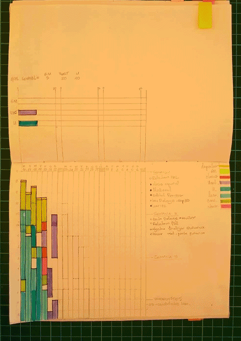
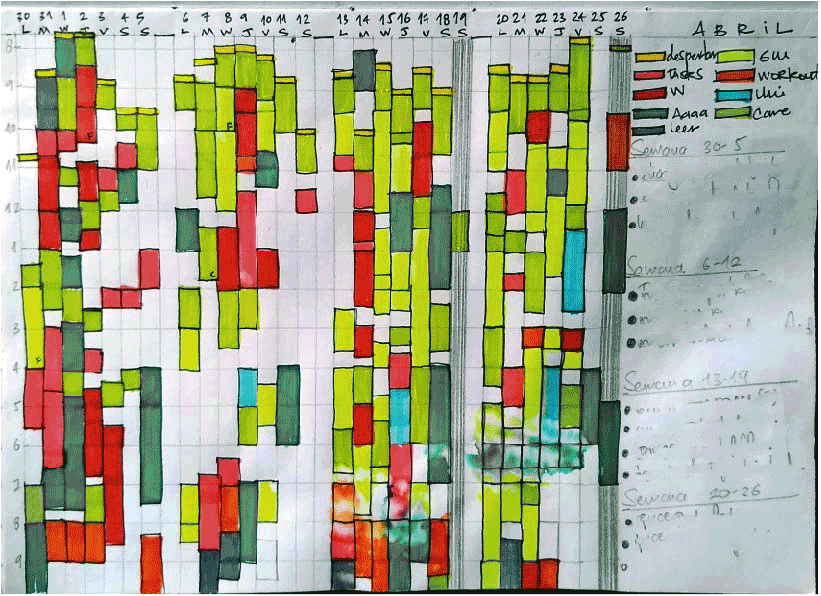

Time as a point of reference opens up the possibility of planning, of decision making and helps us with the creation of habits. It gives us permission to imagine a future and work towards it.
We build calendars and structures in order to understand the patterns of nature. And in a similar way, we can build our own patterns and routines, using time for personal purposes.
Last year, I had a couple of months to study for a big test. It was a huge task that I didn't know how to tackle.
At first, I blocked time everyday, but that wasn't enough. I needed to feel security around the fact that I was putting in the time to study. It was a combination of accountability for myself and a way to acknowledge my efforts towards the test.
As a designer and a visual thinker, I wanted to create the best way to manage my time and to see, literally, where it was going. I consulted with my old friends: pencil and paper. I started to play with lines and grids and see what was working best for me. What came out of this was my calendar system of time tracking, planning and weekly goal setting.
My initial layout had columns for each day, each page had three weeks and I was using eight color codes. The color for the test was purple. It still gives me satisfaction to see how much time I was putting into the test and knowing that it paid off at the end.
The fact that I had three weeks in one page allows me to see progress over time and a direct comparison between weeks and the color coding allows me to see different layers of information at once. In the right column, I have a space for my color conventions and a space for the three goals I set each Sunday night after my weekly review. Having my goals there helps me to stay on track and they are related to my monthly, quarterly and annual goals.
After a few months, I realized that I could use the space better and added another week to the layout so I had one month on each page. I also added new labels as I was feeling more confident in my ability to create habits. I don’t usually track my weekends unless I’m doing artist work, reading or writing.
This is how my current color system works
- Yellow line: Waking up.
- Light Green: Self care.
- Blue: Academic work.
- Blue with dots or lines: Personal writing and reading.
- Orange: Active wellness. Working out, meditation.
- Red: Work.
- Dark Green: Artist work.
- Pink: General tasks.
- Yellow highlighter: This is my biggest personal project at the time. Everything related to learning digital product design and working towards building products goes here.
- Yellow with lines: community and online events, coworking sessions.
What is lacking in my system?
Because the space in my notebook is limited, I use an additional calendar in my wall where I schedule with small bookmarks. I love an analog solution because I can just glance at my calendar to see if I have free time or not. But at the same time, is additional work that I’d love to avoid. I optimized this by naming the labels in a general way. For example, I write “coworking session” instead of “coworking session with Nibras” so I can re-use the label for multiple coworking sessions and I have the details of each event in my online calendar.
I also use a to do list app where I schedule my everyday tasks, prioritizing the goals for my week as a recurring task on top of everything else. My current color coding system is consistent in my notebook, my physical calendar and my to do list.
Why is this useful?
This system keeps me accountable, helps me track my habits and routines over time, and allows me to see how consistent I am from one week into the other and from one month into the other. I can get better at things if I am consistent with my efforts.
I believe that we are what we do. Seeing where my time goes gives me a better understanding of myself. I can see what matters to me the most at any given moment and allows me to be mindful of how I’m spending my time.
Time management and planning is one of the most important things in my life. It is a part of what gives me agency and freedom to think, to plan and to build the version of the human being I want to be.